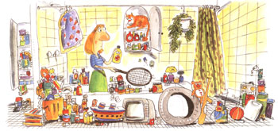

LAST LAUGH
One writer's harried attempt,
According to the U.S. Census Bureau, 50 percent of the American population has moved in the past eight years. Consider the psychological cost of all those moves! No wonder the buzzword of our decade is stress. It was inevitable that, sooner or later, I would catch up with the stress workshops, and sure enough...
Our calm, collected leader picked our brains on the subject of personal stress. I'd never really thought of my life as stressful, but after hours of taking in everybody else's problems, I couldn't wait to get out of there.
We were advised that these stresses must be exorcised if we were to be functioning individuals. I came home determined to deal with what I had identified as the source of my stress. It's all pretty well hidden in closets and drawers and cupboards-disorganization, the key plague of my life.
The next day, as luck would have it, I spoke for a group that was having a workshop session on getting organized! I hung around after I'd delivered my own chaotic lecture to see what I could learn. There were test questions to determine the seriousness of your disorganization.
I flunked them all: 1. "does it take you more than ten minutes to lay your hand on a given item in your household?" I hid a gold nugget someplace in my house three years ago and haven't seen it since. 2. "Are there papers on your desk you haven't looked through in a week or more?" There are papers on my desk that were mailed with 6-cent stamps. 3. "Do you put off doing a job so long it becomes an emergency or panic situation?" Is there some other way?
I didn't stay for the whole session. Halfway down the list of remedies I read, "Decide to start changing right away ...while you' are motivated." The adrenaline started flowing and the stress was mounting. I sneaked out and raced home (100 miles in two hours).
"Where are you going in such a hurry?" said Paul as I rushed past him and upstairs.
"Gonna clean the bathroom cupboard," I called back.
"What? At 10:30 at night?"
"I'm motivated;" said I.
"You're nuts," said he, shuffling off to bed through the chaos of what had been an orderly bathroom 10 minutes earlier.
At 3 A.M., I was still standing in the bathtub rummaging through the medicine cupboard built above it, trying to figure out whether I would ever really need a quart of Epsom salts, two cans of boric, and that Preparation W eradication of warts. And Green Mountain Salve for boils! I haven't had a boil for 25 years ...but you never know. And what's this? Kwell medicated shampoo? "For head lice and their nits." What's that stuff doing in here?
There were just too many decisions for that hour of the night. My stomach was one big nervous lump. The root of all this stress is the fact that in all our lives we've never moved. People who move don't harbor things like camphor and Calamine lotion and White Cloverine Salve. They certainly don't keep shampoo for infestations nobody's ever had!
Way back behind the Milk of Magnesia, and the enema syringes was a small plastic pack containing a goggle defogging cloth. Nobody's ever going to use that again, says I to myself, tossing it toward the wastebasket, where it landed with a strange clunk. Hmm....that's funny.
I retrieved and opened it. Out rolled my gold nugget! Enough organization for one night. I took a couple of Rolaids and went off to bed.
-From Harvest of Bittersweet, Copyright © by Patricia Penton Leimbach.
|
 ILLUSTRATION BY KEITH BENDIS |
|
|